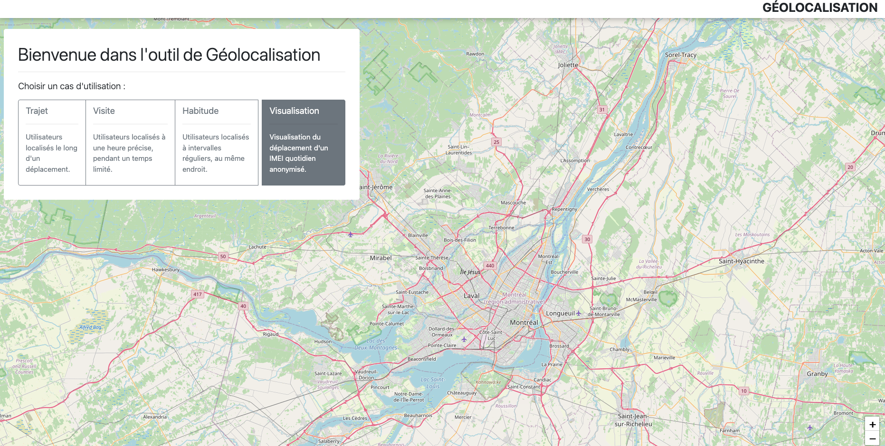
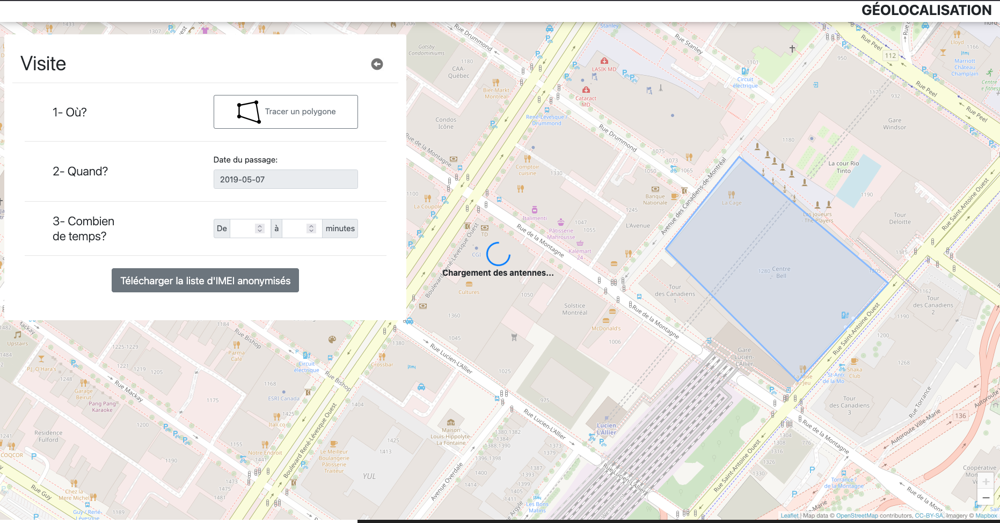

Projects
Click on any project to view details
Data Science
Forecasting Interest Rate Fluctuations
Multi-horizon forecasting of US 10-year Treasury yields using deep learning and statistical models. Initial work done as part of the Défi IA 2025 competition organized by Caisse de Dépôt et Placement du Québec (CDPQ), which my team won in January 2025.
- Multi-step forecasting (1 to 36 months ahead)
- Probabilistic outputs with uncertainty intervals
- Walk-forward validation with baseline comparisons
- Public data via FRED API
Key Features
- Multi-step forecasting: 1 to 36 months ahead predictions
- Probabilistic outputs: Quantile forecasts with uncertainty intervals
- Rigorous evaluation: Walk-forward validation, chronological splits, baseline comparisons
- Public data: FRED API integration for reproducibility
Tech Stack
- Models: PyTorch (LSTM, Transformers)
- Framework: Darts time series library
- Data: Federal Reserve Economic Data (FRED) API
Results
Performance comparison across forecast horizons (lower is better):
| Model | Category | 1 Month MAPE | 3 Months MAPE | 12 Months MAPE | 36 Months MAPE |
|---|---|---|---|---|---|
| Naive | Extrapolation | 7.7% | 18.2% | 53.6% | 84.4% |
| AR(12) | Extrapolation | 7.6% | 16.9% | 52.7% | 65.0% |
| VAR | Multivariate Regression | 17.3% | 38.7% | 90.5% | 57.2% |
| Lasso | Univariate Regression | 7.4% | 16.2% | 43.2% | 53.5% |
| N-HiTS | Non-parametric | 7.2% | 16.4% | 44.8% | 54.9% |
| TFT | Non-parametric | 7.3% | 16.1% | 42.6% | 53.0% |
Key findings:
- Best short-term (1 month): N-HiTS achieves 7.2% MAPE, outperforming all models including naive baseline
- Best long-term (36 months): TFT excels at extended horizons with 53.0% MAPE vs. 84.4% for naive
- Classical ML: Lasso regression competitive with deep learning at short/medium horizons, offering better interpretability
Data Sources
- Primary: FRED API (Treasury yields, unemployment, CPI, Fed funds rate, S&P 500, GDP, employment, inflation expectations)
- Sentiment: SF Fed Daily News Sentiment Index (public dataset)
All data sources are publicly available for reproducibility.
Forecasting Electricity Consumption
Time series forecasting of electricity consumption patterns across Quebec regions using classical statistical models and deep learning approaches. Developed as part of MATH60630 (Machine Learning II) coursework at HEC Montréal.
Overview
This project analyzes and forecasts electricity consumption for different Municipal Regional Counties (MRCs) and sectors in Quebec using historical data from Hydro-Québec. The analysis incorporates weather data (temperature) and geographic information to improve forecast accuracy across various consumer segments (residential, commercial, industrial, agricultural).
Tech Stack
- Statistical Models: ARIMA/SARIMAX
- Deep Learning: Temporal Convolutional Networks (TCN)
- Data Processing: Python, Pandas, NumPy
- Geospatial: Google Maps API, Geopandas
- Weather Data: Meteostat API
Features
Data Processing
- Historical electricity consumption data aggregation by MRC and sector
- Temperature data integration using geographic coordinates
- Missing value interpolation based on spatial proximity using Google Maps API
- Feature engineering with seasonal and weather variables
Modeling Approaches
- SARIMAX: Captures seasonal patterns and trends, incorporates exogenous variables (temperature, sector type), provides interpretable coefficients
- Temporal Convolutional Networks (TCN): Parallel processing of time series, long-range dependency modeling, efficient computation for long sequences
Data Sources
- Hydro-Québec: Historical electricity consumption by MRC and sector
- Meteostat: Historical temperature data for Quebec regions
- Google Maps API: Geographic coordinates for MRC spatial analysis
Key Insights
The project compares forecasting performance across different model architectures:
- SARIMAX excels at capturing clear seasonal patterns with interpretable parameters
- TCN demonstrates strong performance in modeling complex temporal dependencies
Model selection depends on the specific MRC-sector combination, data availability, and forecast horizon requirements.
Cloud Engineering
Prefect Workflow Orchestration Platform
Production-ready, self-hosted Prefect workflow orchestration platform deployed on Google Cloud Platform with Infrastructure-as-Code provisioning and automated CI/CD.
- Complete infrastructure provisioning with Terraform
- VPC networking with private IP addressing and firewall rules
- GitOps CI/CD pipeline with automated Docker builds
- Multi-service Docker Compose setup (PostgreSQL, Redis, Prefect server/worker)
- Serverless workflow execution on Cloud Run
Overview
This project demonstrates the design and implementation of a scalable data workflow orchestration platform using Prefect, deployed on Google Cloud Platform with fully automated infrastructure provisioning through Terraform.
Technical Skills & Implementation
- Terraform Infrastructure as Code: Complete GCP infrastructure provisioned with modular configuration files for compute, networking, security, and CI/CD resources
- GCP Cloud Architecture: VPC networking with private IP addressing, Serverless VPC Access connector for Cloud Run integration, Service Networking for Cloud Build, and zero-trust firewall rules
- Prefect Workflow Orchestration: Python-based data pipelines with task dependencies, scheduled deployments, and distributed execution on serverless Cloud Run infrastructure
- GitOps CI/CD Pipeline: Automated Docker image builds and workflow deployment synchronization via Cloud Build, triggered on every commit to main branch
- Docker & Container Orchestration: Multi-service management with Docker Compose (PostgreSQL, Redis, Prefect server/worker), custom images with workflow dependencies, and serverless execution
- Security Implementation: Network isolation with no public access to orchestration layer, IAM service accounts with least-privilege permissions, secrets management, and SSH via Identity-Aware Proxy
Architecture
High-Level System Design
┌─────────────────────────────────────────────────────────┐ │ GCP Project │ │ │ │ ┌──────────────────────────────────────────────────┐ │ │ │ Prefect Server VM (Docker Compose) │ │ │ │ ┌──────────┐ ┌──────────┐ ┌──────────┐ │ │ │ │ │PostgreSQL│ │Prefect │ │ Worker │ │ │ │ │ │ Database │ │API & UI │ │ Process │ │ │ │ │ └──────────┘ └──────────┘ └──────────┘ │ │ │ │ Internal IP: 10.162.0.37:80 │ │ │ └──────────────────────────────────────────────────┘ │ │ ▲ │ │ │ Secure VPC Access │ │ ┌──────────────────┼──────────────────┐ │ │ │ │ │ │ │ ┌────┴────┐ ┌──────┴──────┐ ┌──────┴──────┐ │ │ │ VPC │ │ Cloud Run │ │Cloud Build │ │ │ │Connector│ │ Workflows │ │ CI/CD │ │ │ │10.8.0.0 │ │ (Jobs) │ │ Pipeline │ │ │ └─────────┘ └─────────────┘ └─────────────┘ │ │ │ │ ┌──────────────────────────────────────────────────┐ │ │ │ Firewall: Restrict HTTP to VPC only │ │ │ │ - VPN/Subnet: 10.162.0.0/20 │ │ │ │ - Cloud Run: 10.8.0.0/28 │ │ │ └──────────────────────────────────────────────────┘ │ └─────────────────────────────────────────────────────────┘
Component Architecture
Prefect Server (VM-based)
- Server: REST API and Web UI for workflow management
- Database: PostgreSQL for workflow metadata and execution history
- Worker: Polls for scheduled workflows and provisions Cloud Run jobs
- Redis: Caching layer for improved performance
Workflow Execution (Cloud Run)
- Serverless container execution with auto-scaling
- Custom Docker image with workflow code and dependencies
- Secure VPC connectivity to Prefect server
- Isolated execution environment per workflow run
Infrastructure (Terraform-managed)
- Compute Engine VM with automated Docker setup
- VPC networking with subnet isolation
- Firewall rules for security
- Service accounts with least-privilege IAM
- Cloud Build for CI/CD automation
Web Development
Geolocation Visualization App
Interactive web application for visualizing mobile device location data with real-time animations and geographic insights. Developed as part of an internship at Vidéotron in Summer 2019.
- Interactive map visualization
- Geolocation data parsing
- Custom animations and styling
Overview
Built with vanilla JavaScript, this application provides an intuitive interface for exploring mobile device movement patterns across geographic regions. The visualization combines interactive maps with custom animations to present location data in an accessible format.
Tech Stack
- Vanilla JavaScript
- Leaflet.js / Maps API
- Custom CSS animations
Features
- Interactive map-based visualization of location data
- Real-time data parsing and processing
- Custom animations for geographic transitions
- Responsive design for various screen sizes
Screenshots

Main application interface

Sub-menu example
Note
This application is no longer functional as it requires access to proprietary Vidéotron telecommunications data that is not publicly available. The screenshots above demonstrate the interface and visualization capabilities when the application was operational.